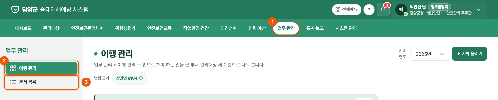
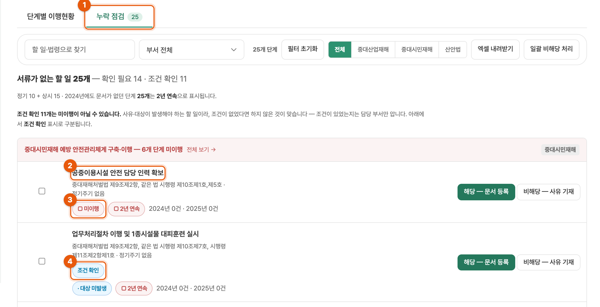
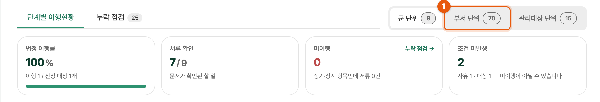
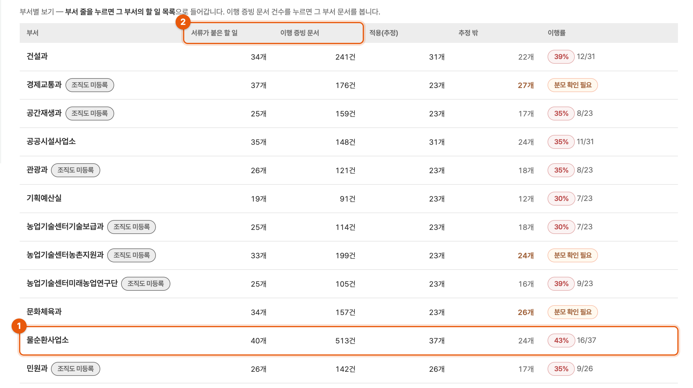
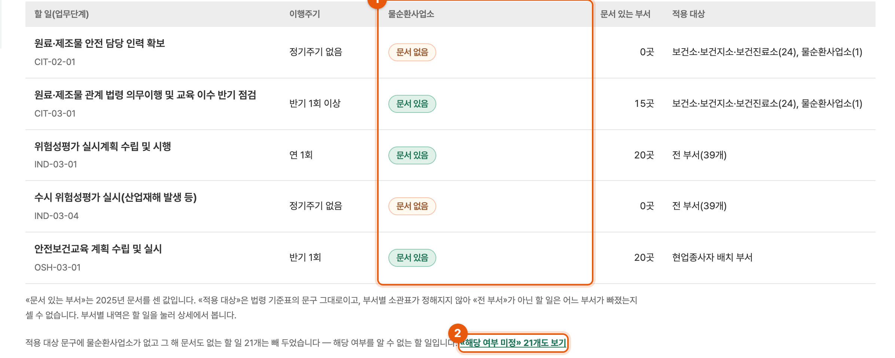
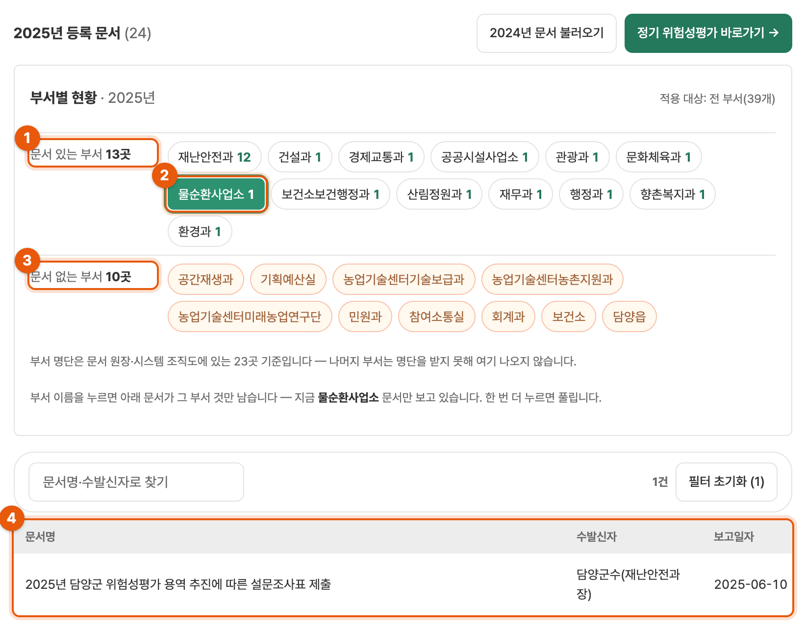

문서 분류 결과가 시스템에 어떻게 들어가 있는지, 어디서 어떻게 보시면 되는지 정리했습니다.
군 전체에서 문서가 한 건도 없는 할 일이 무엇인지
다른 부서는 문서가 있는데 특정 부서만 비어 있는 할 일
할 일에 붙은 문서가 그 일의 증빙이 맞는지

| 업무 관리 › 이행 관리 | 법에서 정한 할 일마다 문서가 붙어 있는지 봅니다. |
| 업무 관리 › 문서 목록 | 할 일에 연결된 문서를 찾아봅니다. 문서 번호(DOC-…)도 여기서 봅니다. |
· 할 일은 94개입니다. 10월 6일 컨설팅 회신으로 반기·연 1회 점검 단계 6개가 새로 생겼습니다.
· 문서와 할 일의 연결은 온나라 문서 제목을 보고 붙인 것이라 틀린 곳이 있을 수 있습니다.
· 기준연도는 2025년입니다(20개 부서 전체). 다른 해는 6개 부서 문서만 들어 있습니다.
· 확인하실 때는 보기만 하시면 됩니다. 등록·비해당 버튼은 누르지 않으셔도 됩니다.
업무 관리 › 이행 관리 › 누락 점검 탭

| 화면 | 뜻 |
|---|---|
| □ 미이행 | 하지 않았거나, 했는데 온나라 문서가 없거나, 다른 제목으로 있어 연결이 안 된 경우입니다. |
| 조건 확인 | 그해에 사유·대상(예: 산업재해, 해당 시설·공사)이 없었다면 문서가 없는 것이 맞습니다. |
| □ 2년 연속 | 지난해에도 문서가 없었습니다. |
새로 생긴 점검 6단계는 문서 연결이 반영되기 전에는 여기에 미이행으로 보일 수 있습니다.
확인 1은 군 전체에서 문서가 없는 일만 보여 줍니다. 다른 부서는 했는데 한 부서만 빠진 일은 부서를 골라서 봅니다.
이행 관리 › 오른쪽 위 부서 단위


고른 부서 이름으로 칸이 하나 생깁니다. 그 칸의 글자가 그 부서 상태입니다.

| 부서 칸 | 뜻 |
|---|---|
| 문서 없음 | 그 부서가 해야 할 일로 보이는데 문서가 없습니다. 이 줄이 확인할 곳입니다. |
| 문서 있음 | 그 부서 문서가 붙어 있습니다. 맞는 문서인지는 할 일 이름을 눌러 확인 3에서 봅니다. |
| «해당 여부 미정» (②를 눌렀을 때) | 기준표 문구만으로는 그 부서 일인지 알 수 없는 할 일입니다. 보통은 넘어가셔도 됩니다. |
할 일 코드는 할 일 이름 아래 회색 글씨입니다(예: IND-03-04).
할 일 이름을 누르면 상세가 열리고, 오른쪽에 부서별 현황이 나옵니다 — 예: 유해·위험요인 파악(종사자 설문조사)

③ «문서 없는 부서»는 확인 2에도 쓸 수 있습니다. «전 부서» 할 일이면 빠진 부서 이름이 여기서 바로 보입니다. 문서 번호(DOC-…)는 문서 목록에서 그 문서를 누르면 제목 아래에 나옵니다.